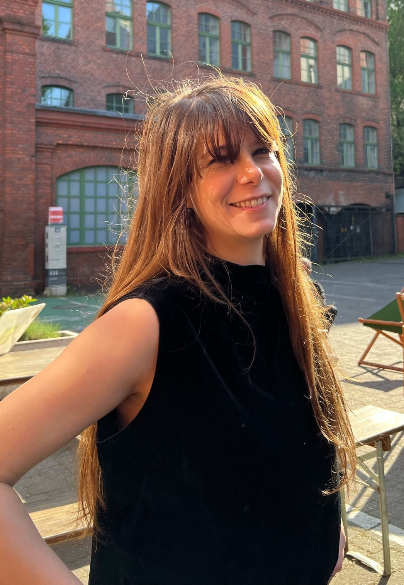

Isabella I. Douzoglou
Interdisciplinary scientist, PhD student
Founder of laser neuron™


Interdisciplinary scientist, PhD student
Founder of laser neuron™
Hi! I'm a computer scientist and PhD student with 7+ years of research experience in applied physics, biology, and machine learning. Driven by curiosity, I founded laser neuron™ out of interest in optical computing, which led to discovering a world of innovation within the semiconductor and quantum computing industry. Our mission is to connect scientists with investors to catalyze creative disruption in the compute market, and ease the path for scientists to successfully engage in entrepreneurship.
Beyond the lab, I'm interested in venture capital, specifically in identifying when research has the potential to spin out into industry. I'm also passionate about science communication, as I believe it holds the key to building a more informed and innovative future.
Feel free to reach out for opportunities, collaborations, events, mentorship, or simply to share cool science!
laser neuron™
Connecting VC with Scientists.
Charité - Universitätsmedizin Berlin · Berlin, Germany
PhD candidate in quantitative neuroscience. Mentored by Prof. Dr. Michela Di Virgilio and Prof. Dr. Kathrin de la Rosa.
Stealth Startup · Berlin, Germany
Led a stealth startup focusing on optical computing.
Max Delbrück Center · Berlin, Germany
PhD candidate investigating biomolecular condensates. Supervised by Dr. Melissa Birol.
Technische Universität Dresden
Conducted a literature review on the state of the art in computer graphics and molecular dynamics simulations algorithms. Supervised by Dr. Nico Scherf.
ESA/ESTEC
Data scientist investigating large interstellar organic molecules. Supervised by Prof. Dr. Bernard Foing.
University of Amsterdam
Deep learning engineer at the IMCN Research Unit. Supervised by Prof. Dr. Birte U. Forstmann.
LMNT agency
Music producer and DJ.
Charité - Universitätsmedizin Berlin
2022 - Present
Bioinformatics and Systems Biology
University of Amsterdam | Vrije Universiteit Amsterdam
2018 - 2020
Computer Science
University of Miami
2010 - 2013
Communications
University of Miami
2010 - 2013
The C-terminus of α-Synuclein Regulates its Dynamic Cellular Internalization by Neurexin 1β
Molecular Biology of the Cell
I'm always interested in hearing about new opportunities, collaborations, or innovative projects. Please feel free to reach out!